소방설비기사(기계분야) (2018-03-04 기출문제)
1과목: 소방원론
1. 다음의 가연성 물질 중 위험도가 가장 높은 것은?
- 수소
- 에틸렌
- 아세틸렌
- 이황화탄소
(정답률: 45%)

2. 상온, 상압에서 액체인 물질은?
- CO2
- Halon 1301
- Halon 1211
- Halon 2402
(정답률: 66%)
3. 0℃, 1atm 상태에서 부탄(C4H10) 1mol을 완전연소시키기 위해 필요한 산소의 mol 수는?
- 2
- 4
- 5.5
- 6.5
(정답률: 54%)
4. 다음 그림에서 목조 건물의 표준 화재 온도 시간 곡선으로 옳은 것은?
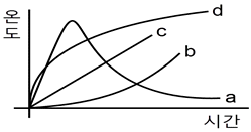
- a
- b
- c
- d
(정답률: 76%)
5. 포소화약제가 갖추어야 할 조건이 아닌 것은?
- 부착성이 있을 것
- 유동성과 내열성이 있을 것
- 응집성과 안정성이 있을 것
- 소포성이 있고 기화가 용이할 것
(정답률: 69%)
6. 건축물 내 방화벽에 설치하는 출입문의 너비 및 높이의 기준은 각각 몇 m 이하인가?
- 2.5
- 3.0
- 3.5
- 4.0
(정답률: 78%)
7. 건축물의 바깥쪽에 설치하는 피난계단의 구조 기준 중 계단의 유효너비는 몇 m 이상으로 하여야 하는가?
- 0.6
- 0.7
- 0.8
- 0.9
(정답률: 59%)
8. 소화약제로 물을 사용하는 주된 이유는?
- 촉매역할을 하기 때문에
- 증발잠열이 크기 때문에
- 연소작용을 하기 때문에
- 제거작용을 하기 때문에
(정답률: 80%)
9. MOC(Minimum Oxygen Concentration : 최소 산소 농도)가 가장 작은 물질은?
- 메탄
- 에탄
- 프로판
- 부탄
(정답률: 59%)
10. 소화의 방법으로 틀린 것은?
- 가연성 물질을 제거한다.
- 불연성 가스의 공기 중 농도를 높인다.
- 산소의 공급을 원활히 한다.
- 가연성 물질을 냉각시킨다.
(정답률: 74%)
11. 다음 중 발화점이 가장 낮은 물질은?
- 휘발유
- 이황화탄소
- 적린
- 황린
(정답률: 45%)
12. 탄화칼슘이 물과 반응 시 발생하는 가연성 가스는?
- 메탄
- 포스핀
- 아세틸렌
- 수소
(정답률: 68%)
13. 수성막포 소화약제의 특성에 대한 설명으로 틀린 것은?
- 내열성이 우수하여 고온에서 수성막의 형성이 용이하다.
- 기름에 의한 오염이 적다.
- 다른 소화약제와 병용하여 사용이 가능하다.
- 불소계 계면활성제가 주성분이다.
(정답률: 41%)
14. Fourier법칙(전도)에 대한 설명으로 틀린 것은?
- 이동열량은 전열체의 단면적에 비례한다.
- 이동열량은 전열체의 두께에 비례한다.
- 이동열량은 전열체의 열전도도에 비례한다.
- 이동열량은 전열체 내·외부의 온도차에 비례한다.
(정답률: 62%)
15. 대두유가 침적된 기름걸레를 쓰레기통에 장시간 방치한 결과 자연발화에 의하여 화재가 발생한 경우 그 이유로 옳은 것은?
- 분해열 축적
- 산화열 축적
- 흡착열 축적
- 발효열 축적
(정답률: 70%)
16. 분진폭발의 위험성이 가장 낮은 것은?
- 알루미늄분
- 유황
- 팽창질석
- 소맥분
(정답률: 73%)
17. 1기압상태에서, 100℃ 물 1g이 모두 기체로 변할 때 필요한 열량은 몇 cal인가?
- 429
- 499
- 539
- 639
(정답률: 76%)
18. pH 9 정도의 물을 보호액으로하여 보호액 속에 저장하는 물질은?
- 나트륨
- 탄화칼슘
- 칼륨
- 황린
(정답률: 75%)
19. 위험물안전관리법령에서 정하는 위험물의 한계에 대한 정의로 틀린 것은?
- 유황은 순도가 60 중량퍼센트 이상인 것
- 인화성고체는 고형알코올 그 밖에 1기압에서 인화점이 섭씨 40도 미만인 고객
- 과산화수소는 그 농도가 35 중량퍼센트 이상인 것
- 제1석유류는 아세톤, 휘발유 그 밖에 1기압에서 인화점이 섭씨 21도 미만인 것
(정답률: 57%)
20. 고분자 재료와 열적 특성의 연결이 옳은 것은?
- 폴리염화비닐 수지 - 열가소성
- 페놀 수지 - 열가소성
- 폴리에틸렌 수지 - 열경화성
- 멜라민 수진 - 열가소성
(정답률: 61%)
2과목: 소방유체역학
21. 유속 6m/s로 정상류의 물이 화살표 방향으로 흐르는 배관에 압력계와 피토계가 설치되어 있다. 이때 압력계의 계기압력이 300kPa 이었다면 피토계의 계기압력은 약 몇 kPa인가?
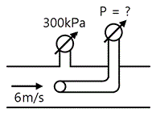
- 180
- 280
- 318
- 336
(정답률: 54%)
22. 관내에 흐르는 유체의 흐름을 구분하는데 사용되는 레이놀즈 수의 물리적인 의미는?
- 관성력/중력
- 관성력/탄성력
- 관성력/압축력
- 관성력/점성력
(정답률: 71%)
23. 정육면체의 그릇에 물을 가득 채울 때, 그릇 밑면이 받는 압력에 의한 수직방향 평균 힘의 크기를 P라고 하면, 한 측면이 받는 압력에 의한 수평방향 평균 힘의 크기는 얼마인가?
- 0.5P
- P
- 2P
- 4P
(정답률: 52%)
24. 그림과 같이 수직 평판에 속도 2m/s로 단면적이 0.01m2인 물제트가 수직으로 세워진 벽면에 충돌하고 있다. 벽면의 오른쪽에서 물제트를 왼쪽 방향으로 쏘아 벽면의 평형을 이루게 하려면 물제트의 속도를 약 몇 m/s로 해야 하는가? (단, 오른쪽에서 쏘는 물제트의 단면적은 0.0⑤ m2이다.)
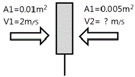
- 1.42
- 2.00
- 2.83
- 4.00
(정답률: 43%)
25. 그림과 같은 사이펀에서 마찰손실을 무시할 때, 사이펀 끝단에서의 속도(V)가 4m/s이기 위해서는 h가 약 몇 m이어야 하는가?
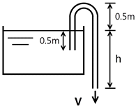
- 0.82m
- 0.77m
- 0.72m
- 0.87m
(정답률: 54%)
26. 펌프에 의하여 유체에 실제로 주어지는 동력은? (단, Lw는 동력(kW), r는 물의 비중량(N/m3), Q는 토출량(m3/min), H는 전양정 (m), g는 중력가속도(m/s2)이다.)
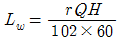
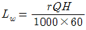
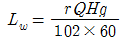
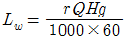
(정답률: 55%)
27. 성능이 같은 3대의 펌프를 병렬로 연결하였을 경우 양정과 유량은 얼마인가? (단, 펌프 1대에서 유량은 Q, 양정은 H라고 한다.)
- 유량은 9Q, 양정은 H
- 유량은 9Q, 양정은 3H
- 유량은 3Q, 양정은 3H
- 유량은 3Q, 양정은 H
(정답률: 63%)
28. 비압축성 유체의 2차원 정상 유동에서 x방향의 속도를 u, y방향의 속도를 v라고 할 때 다음에 주어진 식들 중에서 연속 방정식을 만족하는 것은 어느 것인가?
- u＝2x＋2y, v＝2x-2y
- u＝a＋2y, v＝x2-2y
- u＝2x＋y, v＝x2＋2y
- u＝x＋2y, v＝2x-y2
(정답률: 50%)
29. 다음 중 동력의 단위가 아닌 것은?
- J/s
- W
- kg·m2/s
- N·m/s
(정답률: 60%)
30. 지름 10㎝인 금속구가 대류에 의해 열을 외부공기로 방출한다. 이때 발생하는 열전달량이 40W이고, 구 표면과 공기 사이의 온도차가 50℃라면 공기와 구 사이의 대류 열전달 계수(W/(m2·K))는 약 얼마인가?
- 25
- 50
- 75
- 100
(정답률: 35%)
31. 지름 0.4m인 관에 물이 0.5m3/s로 흐를 때 길이 300m에 대한 동력손실은 60kW였다. 이때 관마찰계수 f는 약 얼마인가?
- 0.015
- 0.020
- 0.025
- 0.030
(정답률: 36%)
32. 체적이 10m3인 기름의 무게가 30000N이라면 이 기름의 비중은 얼마인가? (단, 물의 밀도는 1000kg/m3이다.)
- 0.153
- 0.306
- 0.459
- 0.612
(정답률: 53%)
33. 비열에 대한 다음 설명 중 틀린 것은?
- 정적비열은 체적이 일정하게 유지되는 동안 온도변화에 대한 내부에너지 변화율이다.
- 정압비열을 정적비열로 나눈 것이 비 열 비 이 다.
- 정압비열은 압력이 일정하게 유지될 때 온도변화에 대한 엔탈피 변화율이다.
- 비열비는 일반적으로 1보다 크나 1보다 작은 물질도 있다.
(정답률: 52%)
34. 비중 0.92인 빙산이 비중 1.025의 바닷물 수면에 떠 있다. 수면 위에 나온 빙산의 체적이 150m3이면 빙산의 전체 체적은 약 몇 m3인가?
- 1314
- 1464
- 1725
- 1875
(정답률: 46%)
35. 초기 상태에서 압력 100kPa, 온도 15℃인 공기가 있다. 공기의 부피가 초기 부피의 1/20이 될 때까지 단열압축할 때 압축 후의 온도는 약 몇 ℃인가? (단, 공기의 비열비는 1.4이다.)
- 54
- 348
- 682
- 912
(정답률: 34%)
36. 수격작용에 대한 설명으로 맞는 것은?
- 관로가 변할 때 물의 급격한 압력 저하로 인해 수중에서 공기가 분리되어 기포가 발생하는 것을 말한다.
- 펌프의 운전 중에 송출압력과 송출유량이 주기적으로 변동하는 현상을 말한다.
- 관로의 급격한 온도변화로 인해 응결되는 현상을 말한다.
- 흐르는 물을 갑자기 정지시킬 때 수압이 급격히 변화하는 현상을 말한다.
(정답률: 63%)
37. 그림에서 h1＝120㎜, h2＝180㎜, h3＝100㎜일 때 A에서의 압력과 묘에서의 압력의 차이 (PA-PB)를 구하면? (단, A, B 속의 액체는 물이고, 차압액주계에서의 중간 액체는 수은(비중 13.6)이다.)
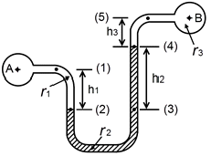
- 20.4kPa
- 23.8kPa
- 26.4kPa
- 29.8kPa
(정답률: 56%)
38. 원형 단면을 가진 관내에 유체가 완전 발달된 비압축성 층류유동으로 흐를 때 전단응력은?
- 중심에서 0이고, 중심선으로부터 거리에 비례하여 변한다.
- 관벽에서 0이고, 중심선에서 최대이며 선형분포한다.
- 중심에서 0이고, 중심선으로부터 거리의 제곱에 비례하여 변한다.
- 전 단면에 걸쳐 일정하다.
(정답률: 47%)
39. 부피가 0.3m3으로 일정한 용기 내의 공기가 원래 300kPa(절대압력), 400K의 상태였으나, 일정 시간동안 출구가 개방되어 공기가 빠져나가 200kPa(절대압력), 350K의 상태가 되었다. 빠져나간 공기의 질량은 약 몇 g인가? (단, 공기는 이상기체로 가정하며 기체상수는 287[J/(kg·K)]이다.)
- 74
- 187
- 295
- 388
(정답률: 41%)
40. 한 변의 길이가 L인 정사각형 단면의 수력지름(hydraulic diameter)은?
- L/4
- L/2
- L
- 2L
(정답률: 48%)
3과목: 소방관계법규
41. 화재예방, 소방시설 설치·유지 및 안전관리에 관한 법령상 화재안전기준을 달리 적용하여야 하는 특수한 용도 또는 구조를 가진 특정 소방 대상물인 원자력 발전소에 설치하지 아니할 수 있는 소방시설은?
- 물분무등소화설비
- 스프링클러설비
- 상수도소화용수설비
- 연결살수설비
(정답률: 55%)
42. 위험물안전관리법상 시·도지사의 허가를 받지 아니하고 당해 제조소등을 설치할 수 있는 기준 중 다음 ( ) 안에 알맞은 것은?
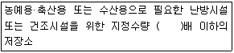
- 20
- 30
- 40
- 50
(정답률: 63%)
43. 소방시설공사업법상 특정소방대상물의 관계인 또는 발주자가 해당 도급계약의 수급인을 도급계약 해지할 수 있는 경우의 기준 중 틀린 것은?
- 하도급계약의 적정성 심사 결과 하수급인 또는 하도급계약 내용의 변경 요구에 정당한 사유 없이 따르지 아니하는 경우
- 정당한 사유 없이 15일 이상 소방시설공사를 계속하지 아니하는 경우
- 소방시설업이 등록 취소되거나 영업 정지된 경우
- 소방시설업을 휴업하거나 폐업한 경우
(정답률: 58%)
44. 소방시설공사업법령상 소방시설공사 완공 검사를 위한 현장 확인 대상 특정소방대상물의 범위가 아닌 것은?
- 위락시설
- 판매시설
- 운동시설
- 창고시설
(정답률: 44%)
45. 소방기본법령상 특수가연물의 저장 및 취급의 기준 중 다음 ( ) 안에 알맞은 것은? (단, 석탄·목탄류를 발전용으로 저장하는 경우는 제외한다.)
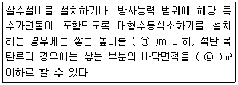
- ㉠ 10, ㉡ 50
- ㉠ 10, ㉡ 200
- ㉠ 15, ㉡ 200
- ㉠ 15, ㉡ 300
(정답률: 44%)
46. 화재예방, 소방시설 설치·유지 및 안전관리에 관한 법상 중앙소방기술심의위원회의 심의사항이 아닌 것은?
- 화재안전기준에 관한 사항
- 소방시설의 설계 및 공사감리의 방법에 관한 사항
- 소방시설에 하자가 있는지의 판단에 관한 사항
- 소방시설공사의 하자를 판단하는 기준에 관한 사항
(정답률: 52%)
47. 화재예방, 소방시설 설치·유지 및 안전관리에 관한 법령상 단독경보형감지기를 설치하여야 하는 특정소방대상물의 기준 중 옳은 것은?
- 연면적 600m2 미만의 아파트 등
- 연면적 1000m2 미만의 기숙사
- 연면적 1000m2 미만의 숙박시설
- 교육연구시설 또는 수련시설 내에 있는 합숙소 또는 기숙사로서 연면적 1000m2 미만인 것
(정답률: 40%)
48. 화재예방, 소방시설 설치·유지 및 안전관리에 관한 법령상 용어의 정의 중 다음 ( ) 안에 알맞은 것은?
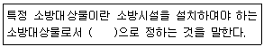
- 행정안전부령
- 국토교통부령
- 고용노동부령
- 대통령령
(정답률: 65%)
49. 화재예방, 소방시설 설치·유지 및 안전관리에 관한 법상 소방안전 특별관리시설물의 대상 기준 중 틀린 것은?
- 수련시설
- 항만시설
- 전력용 및 통신용 지하구
- 지정문화재인 시설(시설이 아닌 지정문화재를 보호하거나 소장하고 있는 시설을 포함)
(정답률: 50%)
50. 위험물안전관리법령상 인화성액체위험물(이황화탄소를 제외)의 옥외탱크저장소의 탱크 주위에 설치하여야 하는 방유제의 설치 기준 중 틀린 것은?
- 방유제 내의 면적은 60000m2 이하로 하여야 한다.
- 방유제는 높이 0.5m 이상 3m 이하, 두께 0.2 이상, 지하매설깊이 1m 이상으로 할 것. 다만, 방유제와 옥외저장탱크 사이의 지반면 아래에 불침윤성 구조물을 설치하는 경우에는 지하매설깊이를 해당 불침윤성 구조물까지로 할 수 있다.
- 방유제의 용량은 방유제 안에 설치된 탱크가 하나인 때에는 그 탱크 용량의 110% 이상, 2기 이상인 때에는 그 탱크 중 용량이 최대인 것의 용량의 110% 이상으로 하여야 한다.
- 방유제는 철근콘크리트로 하고, 방유제와 옥외저장탱크 사이의 지표면은 불연성과 불침윤성이 있는 구조(철근콘크리트 등)로 할 것. 다만, 누출된 위험물을 수용할 수 있는 전용유조 및 펌프 등의 설비를 갖춘 경우에는 방유제와 옥외저장탱크 사이의 지표면을 흙으로 할 수 있다.
(정답률: 58%)
51. 소방기본법령상 특수가연물의 품명별 수량 기준으로 틀린 것은?
- 합성수지류(발포시킨 것) : 20m3 이상
- 가연성액체류 : 2m3 이상
- 넝마 및 종이부스러기 : 400kg 이상
- 볏짚류 : 1000kg 이상
(정답률: 61%)
52. 위험물안전관리법상 업무상 과실로 제조소등에서 위험물을 유출·방출 또는 확산시켜 사람의 생명·신체 또는 재산에 대하여 위험을 발생시킨 자에 대한 벌칙 기준으로 옳은 것은?
- 10년 이하의 징역 또는 금고나 1억 원 이하의 벌금
- 7년 이하의 금고 또는 7천만 원 이하의 벌금
- 5년 이하의 징역 또는 1억 원 이하의 벌금
- 3년 이하의 징역 또는 3천만 원 이하의 벌금
(정답률: 62%)
53. 위험물안전관리법령상 제조소의 위치·구조 및 설비의 기준 중 위험물을 취급하는 건축물 그 밖의 시설의 주위에는 그 취급하는 위험물을 최대수량이 지정수량의 10배 이하인 경우 보유하여야 할 공지의 너비는 몇 m 이상 이어야 하는가?
- 3
- 5
- 8
- 10
(정답률: 43%)
54. 화재예방, 소방시설 설치·유지 및 안전관리에 관한 법령상 종합정밀점검 실시 대상이 되는 특정소방대상물의 기준 중 다음 ( )안에 알맞은 것은?
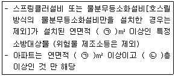
- ㉠ 2000, ㉡ 7
- ㉠ 2000, ㉡ 11
- ㉠ 5000, ㉡ 7
- ㉠ 5000, ㉡ 11
(정답률: 65%)
55. 소방기본법상 소방업무의 응원에 대한 설명 중 틀린 것은?
- 소방본부장이나 소방서장은 소방활동을 할 때에 긴급한 경우에는 이웃한 소방본부장 또는 소방서장에게 소방업무의 응원을 요청할 수 있다.
- 소방업무의 응원 요청을 받은 소방본부장 또는 소방서장은 정당한 사유 없이 그 요청을 거절하여서는 아니 된다.
- 소방업무의 응원을 위하여 파견된 소방대원은 응원을 요청한 소방본부장 또는 소방서장의 지휘에 따라야 한다.
- 시·도지사는 소방업무의 응원을 요청하는 경우를 대비하여 출동 대상지역 및 규모와 필요한 경비의 부담 등에 관하여 필요한 사항을 대통령령으로 정하는 바에 따라 이웃하는 시·도지사와 협의하여 미리 규약으로 정하여야 한다.
(정답률: 58%)
56. 화재예방, 소방시설 설치·유지 및 안전관리에 관한 법령상 소방안전관리대상물의 소방안전관리자가 소방훈련 및 교육을 하지 않은 경우 1차 위반 시 과태료 금액 기준으로 옳은 것은?
- 200만원
- 100만원
- 50만원
- 30만원
(정답률: 44%)
57. 소방기본법상 시·도지사가 화재경계지구로 지정할 필요가 있는 지역을 화재경계지구로 지정하지 아니하는 경우 해당 시·도지사에게 해당 지역의 화재경계지구 지정을 요청할 수 있는 자는?
- 행정안전부장관
- 소방청장
- 소방본부장
- 소방서장
(정답률: 52%)
58. 화재예방, 소방시설 설치·유지 및 안전관리에 관한 법상 공동 소방안전관리자 선임대상 특정소방대상물의 기준 중 틀린 것은?
- 판매시설 중 상점
- 고층 건축물(지하층을 제외한 층수가 11층 이상인 건축물만 해당)
- 지하가(지하의 인공구조물 안에 설치된 상점 및 사무실, 그 밖에 이와 비슷한 시설이 연속하여 지하도에 접하여 설치된 것과 그 지하도를 합한 것)
- 복합건축물로서 연면적이 5000m2이상인 것 또는 층수가 5층 이상인 것
(정답률: 49%)
59. 소방기본법령상 일반음식점에서 조리를 위하여 불을 사용하는 설비를 설치하는 경우 지켜야 하는 사항 중 다음 ( ) 안에 알맞은 것은?
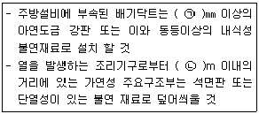
- ㉠ 0.5, ㉡ 0.15
- ㉠ 0.5, ㉡ 0.6
- ㉠ 0.6, ㉡ 0.15
- ㉠ 0.6, ㉡ 0.5
(정답률: 45%)
60. 소방기본법령상 소방용수시설별 설치기준 중 옳은 것은?
- 저수조는 지면으로부터의 낙차가 4.5m 이상일 것
- 소화전은 상수도와 연결하여 지하식 또는 지상식의 구조로 하고, 소방용 호스와 연결하는 소화전의 연결금속구의 구경은 50mm로 할 것
- 저수조 흡수관의 투입구가 사각형의 경우에는 한 변의 길이가 60㎝ 이상일 것
- 급수탑 급수배관의 구경은 65mm 이상으로 하고, 개폐밸브는 지상에서 0.8m 이상, 1.5m 이하의 위치에 설치하도록 할 것
(정답률: 45%)
4과목: 소방기계시설의 구조 및 원리
61. 제연설비의 배출량 기준 중 다음 ( ) 안에 알맞은 것은?
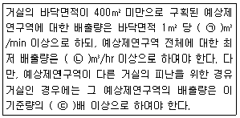
- ㉠ 0.5, ㉡ 10000, ㉢ 1.5
- ㉠ 1, ㉡ 5000, ㉢ 1.5
- ㉠ 1.5 ㉡ 15000, ㉢ 2
- ㉠ 2, ㉡ 5000, ㉢ 2
(정답률: 58%)
62. 케이블트레이에 물분무소화설비를 설치하는 경우 저장하여야 할 수원의 최소 저수량은 몇 m3인가? (단, 케이블트레이의 투영된 바닥면적은 70m2이다.)
- 12.4
- 14
- 16.8
- 28
(정답률: 55%)
63. 호스릴 이산화탄소소화설비의 노즐은 20℃에서 하나의 노즐마다 몇 kg/min 이상의 소화약제를 방사할 수 있는 것이어야 하는가?
- 40
- 50
- 60
- 80
(정답률: 46%)
64. 차고·주차장의 부분에 호스릴포소화설비 또는 포소화전설비를 설치할 수 있는 기준 중 틀린 것은?(관련 규정 개정전 문제로 여기서는 기존 정답인 3번을 누르면 정답 처리됩니다. 자세한 내용은 해설을 참고하세요.)
- 지상 1층으로서 방화구획 되거나 지붕이 없는 부분
- 지상에서 수동 또는 원격조작에 따라 개방이 가능한 개구부의 유효면적의 합계가 바닥면적의 20% 이상인 부분
- 옥외로 통하는 개구부가 상시 개방된 구조의 부분으로서 그 개방된 부분의 합계면적이 해당 차고 또는 주차장의 바닥면적의 20% 이상인 부분
- 완전 개방된 옥상주차장 또는 고가 밑의 주차장 등으로서 주된 벽이 없고 기둥뿐 이거나 주위가 위해방지용 철주 등으로 둘러싸인 부분
(정답률: 61%)
65. 특별피난계단의 계단실 및 부속실 제연설비의 수직풍도에 따른 배출기준 중 각층의 옥내와 면하는 수직풍도의 관통부에 설치하여야 하는 배출댐퍼 설치기준으로 틀린 것은?
- 화재층의 옥내에 설치된 화재감지기의 동작에 따라 당해층의 댐퍼가 개방될 것
- 풍도의 배출댐퍼는 이·탈착구조가 되지 않도록 설치할 것
- 개폐여부를 당해 장치 및 제어반에서 확인할 수 있는 감지기능을 내장하고 있을 것
- 배출댐퍼는 두께 1.5㎜ 이상의 강판 또는 이와 동등 이상의 성능이 있는 것으로 설치하여야 하며 비 내식성 재료의 경우에는 부식방지 조치를 할 것
(정답률: 65%)
66. 인명구조기구의 종류가 아닌 것은?
- 방열복
- 구조대
- 공기호흡기
- 인공소생기
(정답률: 64%)
67. 분말소화약제의 가압용 가스용기의 설치기준 중 틀린 것은?
- 분말 소화약제의 저장용기에 접속하여 설치하여야 한다.
- 가압용가스는 질소가스 또는 이산화탄소로 하여야 한다.
- 가압용 가스용기를 3병 이상 설치한 경우에 있어서는 2개 이상의 용기에 전자개방밸브를 부착하여야 한다.
- 가압용 가스용기에는 2.5 MPa 이상의 압력에서 압력 조정이 가능한 압력조정기를 설치하여야 한다.
(정답률: 50%)
68. 스프링클러헤드의 설치기준 중 옳은 것은?
- 살수가 방해되지 아니하도록 스프링클러 헤드로부터 반경 30㎝ 이상의 공간을 보유할 것
- 스프링클러헤드와 그 부착면과의 거리는 60㎝ 이하로 할 것
- 측벽형스프링클러헤드를 설치하는 경우 긴 변의 한쪽 벽에 일렬로 설치하고 3.2 m 이내마다 설치할 것
- 연소할 우려가 있는 개구부에는 그 상하좌우에 2.5m 간격으로 스프링클러 헤드를 설치하되, 스프링클러헤드와 개구부의 내측 면으로부터 직선거리는 15㎝ 이하가 되도록 할 것
(정답률: 46%)
69. 포헤드의 설치기준 중 다음 ( ) 안에 알맞은 것은?
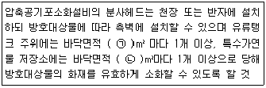
- ㉠ 8, ㉡ 9
- ㉠ 9, ㉡ 8
- ㉠ 9.3, ㉡ 13.9
- ㉠ 13.9, ㉡ 9.3
(정답률: 52%)
70. 분말소화설비의 수동식 기동장치의 부근에 설치하는 비상스위치에 대한 설명으로 옳은 것은?
- 자동복귀형 스위치로서 수동식 기동장치의 타이머를 순간정지 시키는 기능의 스위치를 말한다.
- 자동복귀형 스위치로서 수동식 기동장치가 수신기를 순간정지 시키는 기능의 스위치를 말한다.
- 수동복귀형 스위치로서 수동식 기동장치의 타이머를 순간정지 시키는 기능의 스위치를 말한다.
- 수동복귀형 스위치로서 수동식 기동장치가 수신기를 순간정지 시키는 기능의 스위치를 말한다.
(정답률: 60%)
71. 이산화탄소 소화설비의 배관의 설치기준 중 다음 ( ) 안에 알맞은 것은?
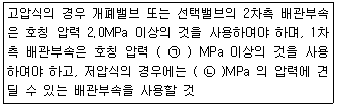
- ㉠ 3.0, ㉡ 2.0
- ㉠ 4.0, ㉡ 2.0
- ㉠ 3.0, ㉡ 2.5
- ㉠ 4.0, ㉡ 2.5
(정답률: 42%)
72. 옥외소화전설비 설치 시 고가수조의 자연 낙차를 이용한 가압송수장치의 설치기준 중 고가수조의 최소 자연낙차수두 산출 공식으로 옳은 것은? (단, H : 필요한 낙차(m), h1 : 소방용 호스 마찰손실 수두(m) h2 : 배관의 마찰손실 수두(m)이다.)
- H＝h1＋h2＋25
- H＝h1＋h2＋17
- H＝h1＋h2＋12
- H＝h1＋h2＋10
(정답률: 63%)
73. 물분무헤드의 설치제외 기준 중 다음 ( ) 안에 알맞은 것은?
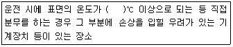
- 100
- 260
- 280
- 980
(정답률: 68%)
74. 연면적이 35000m2인 특정소방대상물에 소화용수설비를 설치하는 경우 소화수조의 최소 저수량은 약 몇 m3인가? (단, 지상 1층 및 2층의 바닥면적 합계가 15000 m2 이상인 경우이다.)(문제 오류로 가답안 발표시 4번으로 발표되었으나 확정답안 발표시 모두 정답처리 되었습니다. 여기서는 4번을 누르면 정답 처리 됩니다.)
- 28
- 46.7
- 56
- 93.3
(정답률: 67%)
75. 소화기에 호스를 부착하지 아니할 수 있는 기준 중 틀린 것은?
- 소화약제의 중량이 2kg 미만인 분말소화기
- 소화약제의 중량이 3kg 미만인 이산화탄소 소화기
- 소화약제의 중량이 4kg 미만인 할로겐 화합물소화기
- 소화약제의 중량이 5kg 미만인 산알칼리 소화기
(정답률: 60%)
76. 고정식 사다리의 구조에 따른 분류로 틀린 것은?
- 굽히는식
- 수납식
- 접는식
- 신축식
(정답률: 55%)
77. 폐쇄형 스프링클러헤드 퓨지블링크형의 표시온도가 121℃~162℃인 경우 후레임의 색별로 옳은 것은? (단, 폐쇄형헤드이다.)
- 파랑
- 빨강
- 초록
- 흰색
(정답률: 52%)
78. 발전실의 용도로 사용되는 바닥면적이 280m2인 발전실에 부속용도별로 추가하여야 할 적응성이 있는 소화기의 최소 수량은 몇 개인가?
- 2
- 4
- 6
- 12
(정답률: 67%)
79. 습식유수검지장치를 사용하는 스프링클러 설비에 동장치를 시험할 수 있는 시험 장치의 설치위치 기준으로 옳은 것은?
- 유수검지 장치에서 가장 먼 가지 배관의 끝으로부터 연결하여 설치할 것
- 교차관의 중간 부분에 연결하여 설치할 것
- 유수검지장치의 측면배관에 연결하여 설치할 것
- 유수검지장치에서 가장 먼 교차배관의 끝으로부터 연결하여 설치할 것
(정답률: 60%)
80. 물분무소화설비 수원의 저수량 설치기준으로 옳지 않은 것은?
- 특수가연물을 저장 또는 취급하는 특정소방대상물 또는 그 부분에 있어서 그 바닥면적 lm2에 대하여 10ℓ/min으로 20분간 방수할 수 있는 양 이상으로 할 것
- 차고 또는 주차장은 그 바닥면적 lm2에 대하여 20ℓ/min으로 20분간 방수할 수 있는 양 이상으로 할 것
- 케이블 덕트는 투영된 바닥면적 lm2에 대하여 12ℓ/min으로 20분간 방수할 수 있는 양 이상으로 할 것
- 콘베이어 벨트 등은 벨트부분의 바닥면적 lm2에 대하여 20ℓ/min으로 20분간 방수할 수 있는 양 이상으로 할 것
(정답률: 65%)